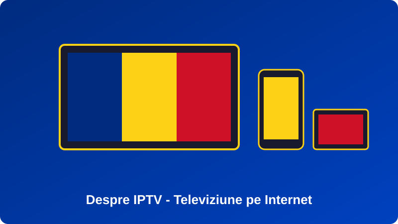
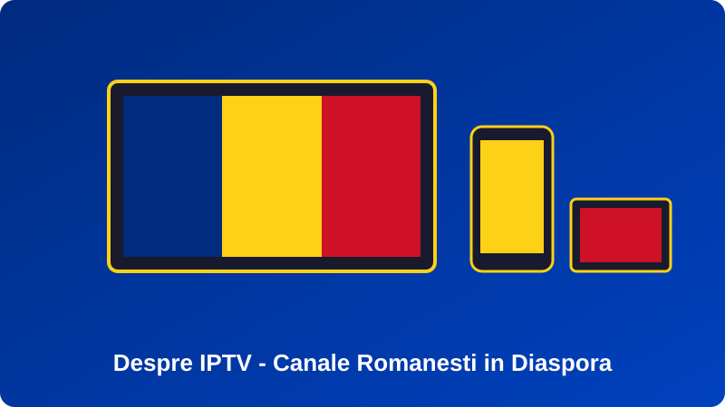

Daca ai auzit prieteni sau rude vorbind despre iptv si nu stii exact ce inseamna, nu esti singurul. Tot mai multe familii renunta la cablu si la antene si trec la televiziunea prin internet, pentru ca este mai ieftina, mai flexibila si mai usor de folosit. Mai ales pentru romanii aflati departe de tara, este cea mai simpla cale de a vedea canalele de acasa.
Totusi, multe pagini scrise despre iptv sunt pline de termeni tehnici sau de promisiuni exagerate. In acest ghid explicam totul pe scurt si pe intelesul tuturor: ce este IPTV, cum functioneaza, ce viteza de internet iti trebuie, ce aparate folosesti, cum deosebesti o lista gratuita de un abonament si cum alegi un furnizor de incredere.
Echipa Romania IPTV ajuta zilnic familii din Romania si din diaspora sa-si puna televiziunea in functiune, deci sfaturile de mai jos vin din situatii reale. Daca vrei mai intai o privire de ansamblu, citeste si pagina despre iptv romania, apoi continua cu partea practica de aici.

Cuprins
- Ce inseamna IPTV: raspuns scurt si clar
- Cum functioneaza IPTV pas cu pas
- Ce poti vedea cu IPTV: canale romanesti si nu numai
- De ce aleg romanii din diaspora IPTV
- Ce echipamente iti trebuie pentru IPTV
- Liste gratuite versus abonament: care este diferenta
- Cum alegi un furnizor de incredere
- Probleme frecvente si cum le rezolvi
- Legalitate, siguranta si confidentialitate
- Sfaturi pentru o experienta cat mai buna
- Intrebari frecvente
- Concluzie
Ce inseamna IPTV: raspuns scurt si clar
Cand cauti informatii despre iptv, prima intrebare este mereu aceeasi: ce este, de fapt? IPTV vine de la Internet Protocol Television si inseamna televiziune livrata prin internet, nu prin antena, cablu sau satelit. Canalele ajung la tine ca un flux video, la fel cum se incarca un film pe un site de streaming, doar ca acum este in direct.
Definitia pe intelesul tuturor
Imagineaza-ti ca televizorul tau nu mai primeste semnal de la un cablu, ci de la routerul din casa. Un server trimite imaginea si sunetul canalului, iar aplicatia de pe televizor le afiseaza. Nu ai nevoie de antena, de parabola sau de un tehnician care sa vina acasa.
Cum se deosebeste de YouTube sau Netflix
Platformele la cerere iti arata filme cand vrei tu. IPTV-ul iti arata canale in direct, cu program fix, exact ca televiziunea clasica: stiri la ora lor, meciuri in timp real, emisiuni de seara. Multe servicii adauga si arhiva si filme la cerere.
Cum functioneaza IPTV pas cu pas
Principiul este simplu, chiar daca tehnologia din spate este complexa. Intelegerea lui te ajuta sa alegi mai bine si sa rezolvi singur micile probleme.
Fluxul de la studio la televizorul tau
Canalul este captat la sursa, convertit in format digital si trimis prin servere puternice. De acolo, fluxul ajunge prin internet la aplicatia ta. Fiecare canal are o adresa proprie, iar aplicatia le strange intr-o lista usor de rasfoit.
Ce viteza de internet iti trebuie
| Calitate | Viteza recomandata |
|---|---|
| SD | 3 Mbps |
| HD | 8 Mbps |
| Full HD | 12 Mbps |
| 4K | 25 Mbps |
Conexiunea prin cablu de retea este mai stabila decat Wi-Fi, mai ales pentru meciuri si seara, la orele de varf. Daca locuiesti intr-un apartament cu multe retele in jur, un cablu ieftin poate rezolva majoritatea blocajelor.
Rolul aplicatiei player
Aplicatia este fereastra prin care vezi totul. Ea citeste lista de canale, afiseaza ghidul de programe si iti lasa sa pui pauza sau sa dai inapoi, acolo unde serviciul permite. Alegerea unui player simplu face diferenta intre o seara placuta si una plina de nervi.
Ce poti vedea cu IPTV: canale romanesti si nu numai
Pentru romanii din tara si din diaspora, miezul ofertei este televiziunea de acasa. Un serviciu bun include canale de stiri, generaliste, filme, sport, muzica si desene pentru copii.
Canale de stiri si generaliste
Stirile in direct si emisiunile de seara sunt motivul numarul unu pentru care familiile din strainatate aleg IPTV. Un jurnal vazut la ora lui te face sa te simti mai aproape de casa. Pentru lista pe categorii, vezi ghidul despre canale romanesti iptv.
Sport, filme si programe pentru copii
Meciurile din campionat si cupele europene, filmele noi si desenele animate in limba romana sunt cerute in aproape fiecare casa. Cu un singur abonament, toata familia are ce urmari, fiecare pe ecranul lui.
Televiziune din alte tari
Multe pachete includ si canale internationale. Daca esti curios cum arata oferta altor comunitati, poti arunca o privire la greek iptv, unde principiul este acelasi, adaptat pentru limba greaca.
De ce aleg romanii din diaspora IPTV
In Germania, Italia, Spania, Marea Britanie sau Belgia, televiziunea romaneasca nu se mai primeste prin cablul local. IPTV-ul rezolva exact aceasta problema, pentru ca depinde doar de internet, nu de tara in care locuiesti.
Aceeasi televiziune, oriunde in lume
Poti urmari canalele preferate in sufragerie, iar in vacanta, pe telefon. Nu ai de schimbat nimic, doar te conectezi la aceeasi aplicatie. Pentru parintii ramasi acasa, aceeasi lista functioneaza identic, deci familia poate comenta aceleasi emisiuni.
Costuri mai mici decat pachetele clasice
Un abonament IPTV costa, de regula, mult mai putin decat cablul plus pachetele extra. Nu ai instalare, nu ai contract pe doi ani si poti renunta oricand. Detalii despre preturi gasesti in ghidul cel mai bun iptv romania.

Ce echipamente iti trebuie pentru IPTV
Vestea buna este ca probabil ai deja aproape tot ce trebuie. Aplicatiile IPTV ruleaza pe majoritatea dispozitivelor de azi.
Smart TV, box Android sau stick
- Smart TV: instalezi aplicatia direct din magazinul televizorului.
- Box Android TV: o solutie ieftina pentru televizoarele mai vechi.
- Stick de streaming: se conecteaza la portul HDMI si ocupa foarte putin loc.
- Telefon si tableta: ideale cand esti plecat de acasa.
- Calculator: util daca lucrezi si vrei un jurnal pe fundal.
Setarea initiala in cinci minute
- Conectezi dispozitivul la internet.
- Instalezi aplicatia recomandata de furnizor.
- Introduci datele primite de la serviciu.
- Astepti incarcarea listei de canale.
- Alegi un canal si verifici imaginea si sunetul.
Daca primesti coduri de activare, citeste si explicatiile din articolul coduri iptv romania, unde descriem pe scurt cum se folosesc.
Liste gratuite versus abonament: care este diferenta
Orice cautare despre iptv da peste liste gratuite. Sunt tentante, dar merita sa le intelegi limitele inainte sa pierzi serile cu ele.
Cum arata o lista gratuita in practica
Listele publice sunt adunate din surse necunoscute si nu au nicio garantie. Canalele dispar, calitatea scade seara, iar linkurile expira fara avertisment. Am explicat detaliat acest subiect in articolul despre daily iptv list.
Ce primesti de la un abonament
| Aspect | Lista gratuita | Abonament |
|---|---|---|
| Stabilitate | Variabila | Constanta |
| Suport | Nu exista | In limba romana |
| Ghid de programe | Rar | Inclus |
| Test inainte de plata | Nu e cazul | Da |
Cum alegi un furnizor de incredere
Piata este plina de oferte, iar diferentele nu se vad intotdeauna din pagina de prezentare. Cateva criterii simple te scutesc de bani pierduti.
Criterii de verificat inainte sa platesti
- Test gratuit sau perioada scurta de proba.
- Suport rapid, de preferat pe WhatsApp.
- Lista clara de canale romanesti.
- Pret transparent, fara taxe ascunse.
- Functionare stabila in orele de varf.
Semnale de alarma
Fii atent la preturile prea mici, la lipsa oricarui contact si la promisiunea de canale nelimitate fara nicio explicatie. Compara si cu alte comunitati: pe tilaa iptv poti vedea cum isi prezinta oferta un alt furnizor. Pentru o privire de ansamblu, citeste si cel mai bun iptv.
Probleme frecvente si cum le rezolvi
Chiar si un serviciu bun poate da mici probleme, de obicei din cauza retelei de acasa. Iata solutiile care functioneaza in cele mai multe cazuri.
Imaginea se blocheaza sau se opreste
Verifica viteza, reporneste routerul si apropie dispozitivul de el. Daca folosesti Wi-Fi, incearca un cablu. Inchide si aplicatiile care consuma banda, cum ar fi descarcarile mari.
Canalul nu porneste
Reporneste aplicatia, apoi dispozitivul. Daca situatia se repeta, spune-i furnizorului ce canal si la ce ora apare problema. Un suport bun rezolva de obicei rapid.
Sunetul nu este sincron
Schimba setarile audio din player sau incearca alta redare. Majoritatea aplicatiilor au o optiune de decodare diferita, care elimina decalajul.
Legalitate, siguranta si confidentialitate
Un alt aspect important despre iptv este siguranta. Tehnologia in sine este perfect legala, la fel ca orice alt tip de streaming video. Diferenta o face sursa continutului si modul in care este oferit.
Ce trebuie sa verifici la sursa
Un furnizor serios are date de contact reale, raspunde la mesaje si explica clar ce primesti. Evita ofertele care apar peste noapte, nu au suport si cer plata in moduri ciudate. Daca ceva pare prea frumos ca sa fie adevarat, de obicei nu este.
Cum iti protejezi datele
- Nu da parolele contului de email sau ale bancii nimanui.
- Instaleaza aplicatii doar din magazine oficiale.
- Foloseste o parola unica pentru contul de IPTV.
- Pastreaza actualizate dispozitivul si aplicatia.
Un abonament de la un furnizor cunoscut, cum este Romania IPTV, iti cere doar datele minime necesare pentru activare.
Sfaturi pentru o experienta cat mai buna
Dupa ce ai pornit serviciul, cateva obiceiuri simple fac diferenta. Totul despre IPTV devine mai usor cand stii ce sa urmaresti.
Optimizeaza reteaua de acasa
Aseaza routerul intr-un loc deschis, departe de pereti grosi si de aparate care produc interferente. Daca ai mai multe ecrane pornite in acelasi timp, verifica daca internetul face fata. Un cablu de retea pe televizorul principal este cea mai buna investitie de cativa lei.
Organizeaza lista de canale
Marcheaza canalele preferate ca favorite si ascunde-le pe cele pe care nu le urmaresti. Astfel gasesti jurnalul sau meciul in cateva secunde, fara sa derulezi sute de canale. Ghidul de programe te ajuta sa vezi ce urmeaza si sa nu ratezi emisiunea preferata.
Foloseste IPTV si in calatorii
Una dintre cele mai apreciate calitati este mobilitatea. Cu aplicatia instalata pe telefon sau tableta, poti urmari canalele romanesti in tren, in hotel sau la rude, atata timp cat ai o conexiune buna. Pentru perioade lungi in afara casei, verifica doar sa nu depasesti numarul de dispozitive permise de abonament.
Vrei sa testezi IPTV acasa la tine?
Scrie-ne pe WhatsApp si primesti un test gratuit cu canale romanesti, fara card si fara contract.
Cere test gratuit pe WhatsAppIntrebari frecvente despre IPTV
Ce este IPTV si cum functioneaza?
IPTV este televiziune livrata prin internet. Canalele ajung la aplicatia ta ca flux video, deci nu ai nevoie de antena, cablu sau parabola.
Este IPTV legal?
Tehnologia este legala. Important este sa alegi un serviciu care respecta regulile din tara ta si sa eviti sursele necunoscute sau suspecte.
De ce viteza de internet am nevoie?
Pentru HD este bine sa ai in jur de 8 Mbps, iar pentru 4K aproximativ 25 Mbps. Cablul de retea este mai stabil decat Wi-Fi.
Pot vedea canale romanesti din strainatate?
Da. Serviciul depinde doar de internet, deci functioneaza in Germania, Italia, Spania, Anglia sau oriunde altundeva.
Pe ce dispozitive merge IPTV?
Pe Smart TV, box Android, stick de streaming, telefon, tableta si calculator. Alegi aparatul pe care il ai deja.
Ce diferenta este intre o lista gratuita si un abonament?
Listele gratuite sunt instabile si fara suport. Un abonament ofera stabilitate, ghid de programe si ajutor in limba romana.
Pot testa serviciul inainte sa platesc?
Da. Ne scrii pe WhatsApp, spui ce aparat folosesti si primesti acces de test fara card si fara contract.
Cate dispozitive pot folosi in acelasi timp?
Depinde de abonament. Numarul de conexiuni se stabileste la comanda si poate fi marit daca ai mai multe ecrane in casa.
Concluzie
Pe scurt, tot ce trebuie sa stii despre iptv este ca nu e nimic complicat: ai nevoie de internet, de un aparat compatibil si de un serviciu stabil. Evita listele gratuite din surse nesigure, testeaza serviciul inainte de plata si alege un furnizor care raspunde repede la mesaje.
Daca vrei sa incerci, scrie-ne pe WhatsApp si porneste-ti canalele preferate cu Romania IPTV. In cateva minute poti avea jurnalul, filmele si meciurile pe ecran, oriunde ai locui.
Citeste in continuare: daily iptv list, code iptv si coduri iptv romania.